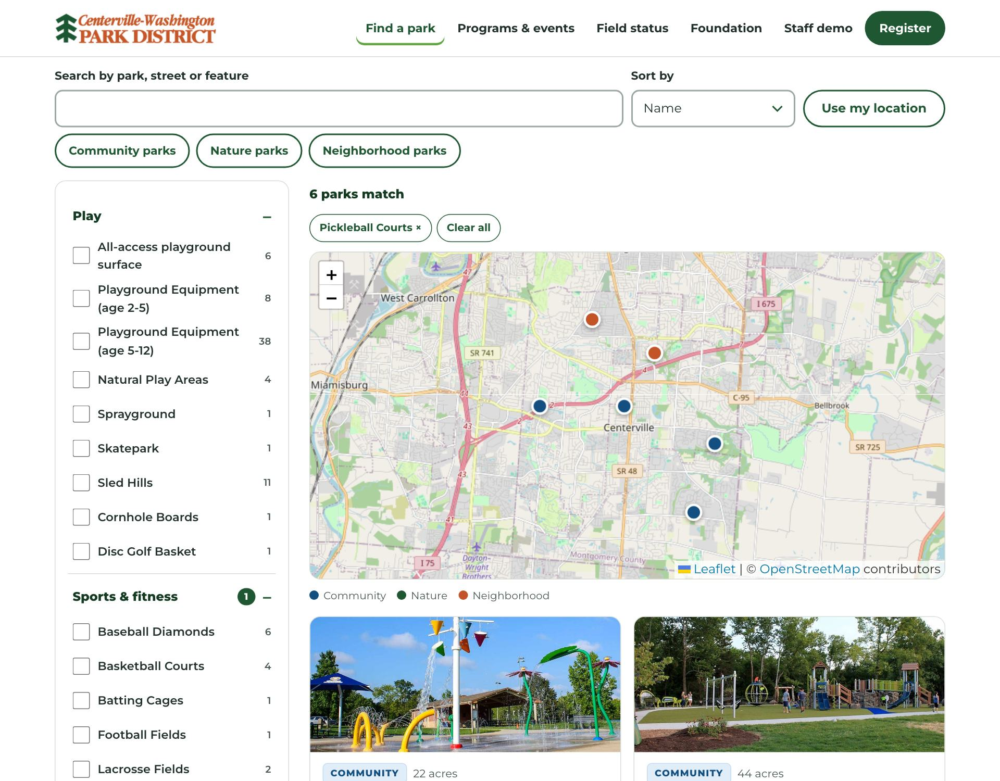
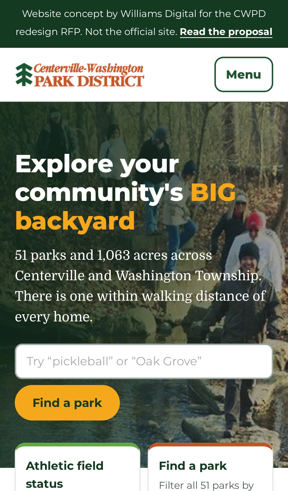

Submitted to Carrie Dittman, Marketing & Communications Manager, Centerville-Washington Park District, 221 N. Main St., Centerville, Ohio 45459.
Dear Ms. Dittman, Ms. Marks and members of the Board of Park Commissioners,
The addendum says accessibility is the main driver of this redesign, that the park finder should tell a resident enough to choose a park without opening every page, and that staff should stop entering each program twice. Those three sentences shaped everything in this proposal.
We want to be direct about who we are. Williams Digital is a small studio in Birmingham, Alabama. Dylan Williams designs and builds every site and remains the support contact after launch. We have not built a site for a park district before, and we have not integrated with RecDesk before. What we have built is a community association site that its staff run themselves, a searchable directory with filters and an approval queue, and our own recreation platform for leagues and parks departments, which handles registration, rosters and schedules. The work would be done remotely, and the price reflects a studio without agency overhead.
Thank you for considering this proposal. We would welcome the chance to walk you through the concept.
Sincerely,
Dylan Williams
Owner, Williams Digital


| The RFP asks for | Where to see it in the concept |
|---|---|
| A better Park Finder | All 51 parks with the District's own 38 features. Results show photo, park type, acreage, address and features, on a map and in a list. Filters combine, the web address updates so a filtered view can be shared, and "Use my location" sorts by distance. On a phone the list and map are separate views. |
| Repeatable park pages | One template. Oak Grove shows the full version for the ten largest parks: gallery, features, field status, programs at that park, trail map, history. Cloverbrook shows the simpler version, which fills in only the sections a park has content for. |
| Programs without double entry | The programs page lists the 80 fall programs with photo, title, time, location, age, description and a Register link to RecDesk, searchable by park, age group and date. Each park page shows its own upcoming programs. |
| Athletic field status | Your most visited page, regrouped by park with a count at the top and a filter by sport. Each status has a word and a symbol, not only a color. |
| Most-visited pages first | The first four choices on the homepage are field status, find a park, programs, and shelter reservations. The newsletter signup sits directly under the programs. |
| Foundation with its own identity | A Foundation page with its own header, colors and type, and a prominent band on the District homepage. |
| Easy for staff | The staff demo lets you check and uncheck a park's features and edit the alert banner, then see the public pages change. |
| Mobile first, fast, accessible | Every concept page passes automated WCAG 2.1 A and AA checks (axe) at desktop and phone sizes, with no sideways scrolling at 320 pixels. |
The concept was created independently from public information on cwpd.org, with no obligation to the Park District. It is unlisted and hidden from search engines. Photographs and text are the District's own. Field status is a sample from October 3, 2026 and is labeled as such. The colors come from the District letterhead. Language translation is not shown in the concept and is included in the build. The Foundation colors are placeholders until its materials are shared.
Athletic Field Status. It is the most visited page on the site, yet it is reached from a homepage tile and is not in the main menu. On October 3 it was a single list of 33 fields in one column with no grouping and no summary, about nine phone screens long. An automated accessibility check found 15 color-contrast failures on that page, more than on any other page we tested. Grouping by park, a count at the top and a sport filter would shorten the most common visit on the site to a glance.
The Park Finder. Staff already keep a clean list of 38 features for 51 parks. The finder shows only park names in return, so a resident opens page after page to compare. The same data can answer the question directly: which parks, where, how far, and what each one has.
Programs. Every program is entered in RecDesk and again on the website, about 60 staff hours a year by your estimate, and the two copies drift apart. One source would remove the retyping and the customer-service calls that follow a mismatch.
RecDesk stays the place where residents register and pay. The website becomes a reader of RecDesk, not a second copy.
WordPress, with a custom theme the District owns and no page builder. Your 15 staff already know WordPress, DataYard already hosts it, and any future vendor can take it over. The difference is in how it is built. The current site lays out pages with Page Builder by SiteOrigin, which lets any edit change the layout. We would give staff labeled fields ("Park hours," "Entrances," "Features") and a small set of approved content blocks. Staff change words and photos, and the design holds.
| Requirement | How it is met |
|---|---|
| Edit and create pages | The standard WordPress editor with a limited set of blocks that match the design. |
| Photos and videos | Media library. Alternative text is requested when an image is added. |
| Schedule future content | Built in. Pages, news and alerts can be set to publish and to expire. |
| Alerts | One screen for the site-wide banner, plus alerts attached to a specific park. |
| Downloadable files | Media library, with trail maps and forms attached to the park or page they belong to. |
| Roles and permissions | Your five permission levels carried over for the 15 staff accounts, each with its own login. The site administrator is notified by email when content changes, as today. |
Additional CMS costs: WordPress has no license fee. The theme is custom and has none. We expect one paid plugin license for custom fields, under $100 per year, which is included in our maintenance plan. Translation can stay on the free Google-based approach you use today for the same 14 languages. If discovery shows a paid translation service is worth it, we would price it then and you would decide.
By building it into the templates, testing it by hand, documenting it, and fixing what your independent auditor finds at no added cost.
For reference, on October 3 we ran the same automated check on six pages of the current site. Every page had a menu button with no name for screen readers and a setting that blocks pinch-zoom. Pages weighed 2.5 to 4.7 MB on a phone. These are the kinds of issues a new theme removes on day one.
You are right that the foundation is sound. We would change four things, and test each with residents before committing.
We would confirm the menu with a short sorting exercise and a find-it test with residents of different ages and abilities, recruited with your help.
No developer on staff is needed. You would need one site administrator, as you have now, hosting at DataYard, the RecDesk API subscription ($600 per year, paid to RecDesk), and someone responsible for software updates and monitoring. Our maintenance plan covers that last item. If you prefer not to take the plan, DataYard or any WordPress developer can do the same work, because nothing in the site is proprietary.
Assumes Board budget approval in January 2027. Launch is set for the week of September 20, 2027, after summer camp registration and the camp season, and inside your third-quarter window. Dates would be confirmed with you at kickoff.
| Stage | Dates | What happens | What CWPD receives |
|---|---|---|---|
| Discovery | Jan 18 – Feb 26 | Kickoff. Analytics review. Full content inventory. RecDesk API confirmed on the test account. Six to eight resident usability sessions on the current site. | Findings memo, content inventory, confirmed RecDesk field list |
| Information architecture | Mar 1 – Mar 26 | Sitemap and menu. Sorting exercise and find-it test with residents. Park page template outline. | Approved sitemap and redirect plan |
| Design | Mar 29 – May 14 | Homepage, park template, finder, programs, field status, news and Foundation, designed for phones first. Two rounds of revisions. | Working designs on a private link |
| Development | May 17 – Jul 16 | WordPress theme, park finder, RecDesk sync, RainoutLine field status, translation, site search, Foundation section, roles and notifications. | Staging site at DataYard that staff can log into |
| Content migration | Jul 12 – Aug 13 | About 150 pages, 45 posts and 255 media items moved. All 51 parks built. Redirects set. | Complete staging site |
| Site testing | Aug 16 – Sep 10 | Devices and browsers, speed, forms, search, links. Accessibility testing and report. Third-party audit and remediation. | Test report and conformance report |
| Training | Aug 30 – Sep 10 | Two live sessions by video, recorded, plus a written guide. | Recordings and staff guide |
| Launch | Week of Sep 20 | Launch on a weekday morning with staff on a call. Redirects verified. | Live site |
| Post-launch support | 90 days, to mid-December | Fixes, adjustments and search monitoring. | Included in the price |
The third-party accessibility audit is scheduled by the District. If it returns after launch, remediation is still included. This schedule leaves six months between launch and the April 2028 compliance date.
A fixed price for the full scope of the RFP and addendum. Redesign, hosting and ongoing maintenance are priced separately, as the addendum requests.
| Redesign stage | Includes | Cost |
|---|---|---|
| Discovery | Kickoff, analytics review, content inventory, RecDesk API review, resident usability sessions | $3,800 |
| Information architecture | Sitemap, menu testing with residents, redirect plan | $2,200 |
| Design | All templates, phone first, two revision rounds, District brand standards | $6,500 |
| Development: site and park finder | Custom theme, park page template for 51 parks, park finder with map, news, search, roles, alerts | $9,500 |
| Development: RecDesk integration | Program sync, searchable program listing, programs on park pages, monitoring | $4,500 |
| Development: other integrations | RainoutLine field status, language translation, analytics | $2,400 |
| Development: Foundation section | Separate identity and navigation at its own address. No donation processing. | $1,800 |
| Content migration | About 150 pages, 45 posts, 255 media items, redirects | $3,200 |
| Site testing | Devices, browsers, speed, search, forms | $1,400 |
| Accessibility | Manual and automated testing, conformance report, remediation of third-party audit findings | $3,000 |
| Training | Two recorded sessions and a written staff guide | $1,000 |
| Launch and post-launch support | Launch, redirects, 90 days of fixes and search monitoring | $1,200 |
| Total redesign | $40,500 |
Payment: milestone invoices at the end of each stage. Nothing is due before work begins. Hourly rate for approved work outside this scope: $95.
We recommend staying with DataYard. They already provide a staging site, SFTP and database access, automated backups and a firewall, and you are satisfied with them. The site would be built to their current WordPress and PHP versions. Cost from Williams Digital: $0. Your DataYard fees are unchanged. The District manages the hosting account, and we work in it as a user.
| $3,600 per year | What support entails |
|---|---|
| Software updates | WordPress, plugins and the theme updated monthly on staging first, then live. Security patches within 48 hours. This includes the custom integration code, so nothing is left frozen. |
| Monitoring | Uptime, the RecDesk sync and the RainoutLine feed. We are alerted to a failure and respond the same business day. |
| Backups | We verify DataYard's backups with a test restore twice a year. |
| Accessibility | A scan every quarter with a short report, and fixes to anything in our code. |
| Small changes | Two hours a month for adjustments staff cannot make themselves. |
| Support | Email and phone, answered within one business day. A site outage is answered the same day, weekends included. |
| Training | A refresher session whenever a new staff member joins. |
| Feature | Detail | Cost |
|---|---|---|
| Mailchimp signup integration | Website signups go straight into your Mailchimp list, ending manual entry. | $600 |
| Trail and accessibility filters | Trail surface, trail length and accessibility features added to the park finder. Requires staff to supply the data. | $1,500 |
| Dog park closure status | The same status treatment as athletic fields, on the homepage and the Oak Grove page. | $400 |
| On-site visit | In-person usability sessions, training or the finalist presentation in Centerville. | Travel at cost |
RecDesk API: $600 per year, paid by the District to RecDesk. RainoutLine, Mailchimp and DataYard: your existing subscriptions, unchanged. Third-party accessibility audit: engaged and paid by the District. Maps use OpenStreetMap, which has no license fee and no usage billing.
Williams Digital is a web design and development studio based in Birmingham, Alabama, owned and operated by Dylan Williams. Add: year founded and business structure (LLC / sole proprietor).
Our sites are hand-coded, mobile-first and light. Staff edit labeled fields and the layout holds, so a site still looks designed two years after launch.
| Role | Who |
|---|---|
| Project lead, designer and developer | Dylan Williams. Dylan Williams is an Alabama-based developer, Auburn University Computer Science Engineering graduate, and technology professional with more than 10 years of experience supporting large-scale productions, digital platforms, and user experiences. He designed and built every project listed below and would be your single point of contact from kickoff through ongoing support. |
A one-person team is a real consideration and we would rather name it than hide it. It is why this proposal keeps WordPress, keeps hosting with DataYard in the District's name, documents everything, and uses no proprietary parts. The District would never depend on us to keep its site running.
We have no park district or municipal client to show. These are the closest matches to what you need.
| Vestlake Communities at Liberty Park | Buy Auburn | Canvas Sports | |
|---|---|---|---|
| What it is | Community association website (Vestavia Hills, AL) | Business network and directory (Auburn, AL) | Our own software for leagues and parks and recreation departments |
| Why it is comparable | Nontechnical staff run it. Two management staff post events, newsletters, minutes and documents themselves. | A finder. Search and filter by state, city and industry, with a "near me" view and profile pages. | Recreation programs. Program setup, registration, rosters, schedules and public pages. It is why RecDesk's data is familiar to us. |
| Website | vestlakelibertypark.com | buyauburn.com | canvassports.app |
| Status | Launched August 2026 | Launched April 2026 | In pilot. A product we own, not a client project. |
| Services | Design, development, staff accounts and training, hosting, support | Design, development, admin dashboard, payments, support | Design, development, accessibility testing |
These ran on custom admin tools because that suited each client. For the District we recommend WordPress, because staff know it and it carries no lock-in. We are not claiming prior WordPress client work. More projects: williamsdigital.io/portfolio/
Accessibility testing is part of every build: automated checks, keyboard and screen reader passes, and measured contrast. Canvas Sports passes automated WCAG AA checks on its public and staff pages. The concept built for this proposal passes automated WCAG 2.1 A and AA checks on all seven pages. We have not yet had a site go through a formal third-party audit, and we welcome yours. The process we would follow is described under question 5.
None with RecDesk specifically. No existing integration, feed or product of ours is being resold here. The approach, its limitations and the one third-party cost ($600 per year to RecDesk) are described under question 3.
We propose no change of host. The site would remain at DataYard, managed by the District, with data in the United States. Because no change is proposed, DataYard's existing terms for uptime, backup frequency, disaster recovery and outage response continue to apply. We would use their staging site for development and review.
| Area | Practice |
|---|---|
| Fewer moving parts | A custom theme and a short list of well-maintained plugins. The fewer plugins a WordPress site runs, the fewer ways in. |
| Vulnerability monitoring | Plugin and core vulnerability notices are monitored, alongside DataYard's firewall and malware protection. |
| Software updates | Applied monthly on staging first, then live. Security patches within 48 hours. Covered by the maintenance plan. |
| SSL | HTTPS on every page, with security headers set. |
| Backup and recovery | DataYard's automated backups, with a test restore twice a year. A full copy of the site is taken before every update. |
| User authentication | An individual account for each staff member, the least access each role needs, strong passwords, and two-step sign-in for administrators. Accounts are removed when staff leave. |
| Common web vulnerabilities | All input is validated and all output escaped. Forms have spam protection that does not rely on visual puzzles. The RecDesk connection is read-only and its key is stored outside the site's public files. The site collects no payment information. |
| Project | Project lead contact | Project URL |
|---|---|---|
| Vestlake Communities at Liberty Park | Name, title, email, phone (confirm permission first) | vestlakelibertypark.com |
| Buy Auburn | Name, title, email, phone (confirm permission first) | buyauburn.com |
| Third reference | Name, title, email, phone (confirm permission first) | URL |
Dylan Williams, Owner, Williams Digital · Dylan@williamsdigital.io · 205-789-1211